00Contexto
El laboratorio se monta en seis fases secuenciales, y las cinco primeras son infraestructura. Este documento cubre ese recorrido completo: desde la primera NIC virtual hasta el momento en que cinco fuentes de telemetría alimentan un panel operativo y el adversario está listo para atacar.
El principio que ordena todo el montaje es la segmentación estricta. Los cuatro segmentos arrancan sin ninguna regla de paso, y cada permiso que se añade después corresponde a una necesidad concreta del modelo de amenaza. Eso tiene un efecto directo sobre la detección: al forzar que todo el tráfico entre zonas pase por pfSense, cada intento de cruce no autorizado se convierte en un log, y cada log en una posible alerta.
El segundo principio es el orden. La telemetría tiene que estar validada antes de lanzar el primer ataque, porque si no el laboratorio se convierte en teatro: ejecutas la técnica y no la detectas por falta de logs, no por falta de criterio. Por eso cada bloque de este writeup termina con una validación explícita, y por eso el entorno del atacante es lo último que se despliega.
Lo que cubre este documento
- Perímetro — pfSense con seis interfaces, plan de direccionamiento, acceso de administración y las reglas que materializan el default-deny.
- Identidad — Windows Server 2022 promovido a controlador de dominio, DNS integrado, estructura de OU y la workstation corporativa unida al dominio.
- Endpoints — dos máquinas de desarrollo heterogéneas y fuera del dominio, con la segmentación verificada en los dos sentidos.
- Stack SOC — Wazuh all-in-one en una VLAN fuera de banda, cuatro agentes, Sysmon, auditd, el syslog de pfSense con decoder propio y el panel de triaje.
- Adversario — Kali en su DMZ, con las reglas de firewall usadas como modeladores de capacidad.
Nota sobre las «VLANs»
VirtualBox no soporta etiquetado 802.1Q nativo como lo hacen Proxmox o ESXi. Las VLANs del diagrama están implementadas como redes internas del hipervisor. Desde el punto de vista de pfSense es funcionalmente equivalente, porque sigue siendo el único router entre ellas, pero conceptualmente no son VLANs reales. El compromiso se asume de forma explícita.
01Perímetro: pfSense con seis interfaces
La VM de pfSense se crea con seis NIC virtuales: una en NAT para la salida a Internet, cuatro en redes internas (una por segmento) y una en host-only para administrar el firewall antes de que exista cualquier endpoint. Todos los adaptadores usan Intel PRO/1000 MT Desktop (82540EM) porque FreeBSD tiene driver nativo para ese modelo, y aparecen en el sistema como em0 a em5.
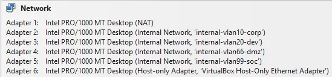
Asignación de interfaces y direccionamiento
Desde la consola de pfSense, opción 1) Assign Interfaces para mapear las NIC, y opción 2) Set interface(s) IP address para direccionar. LAN ya venía provisionada por el asistente de instalación; OPT1, OPT2 y OPT3 se configuran a mano.
| Interfaz | Nombre en el lab | IPv4 / máscara | DHCP |
|---|---|---|---|
| em0 | WAN | DHCP — 10.0.2.15 | — |
| em1 | VLAN10 · Corporativa | 10.10.10.1/24 | .100–.200 |
| em2 | VLAN20 · Desarrollo | 10.10.20.1/24 | .100–.200 |
| em3 | VLAN66 · Adversario | 10.10.66.1/24 | .100–.200 |
| em4 | VLAN99 · SOC | 10.10.99.1/24 | .100–.200 |
| em5 | MGMT · host-only | 192.168.56.10/24 | — |
El rango DHCP se deja en .100–.200 de forma deliberada: .10–.99 queda libre para los activos con IP fija (DC, workstations, Wazuh, Kali), que son los que aparecen escritos en reglas de firewall y en reglas de Wazuh. Si esas IP bailasen, habría que reescribir ambos conjuntos.
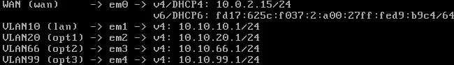
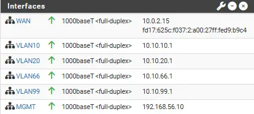
Arranque del GUI por la interfaz host-only
El GUI de pfSense solo responde a hosts que estén dentro de una de sus redes, y en este punto no existe ninguna VM en ningún segmento. La solución es una red host-only: el adaptador del equipo anfitrión en 192.168.56.1/24 y em5 en 192.168.56.10/24. Esta interfaz queda documentada como vía de administración y se restringe por regla.
Fallo 1 · Bloqueo total en la interfaz nueva
Tras direccionar em5, la consola anunció la URL del GUI y el navegador daba timeout. La prueba por capas aclaró el escenario: desde pfSense, ping 192.168.56.1 respondía, y el host confirmaba su propia IP con ipconfig, pero ping 192.168.56.10 desde el host no contestaba. L2 y L3 funcionaban, así que el bloqueo era del filtro.
pfSense aplica default-deny en todas las interfaces salvo LAN, que lleva una regla anti-lockout automática. MGMT no tenía ninguna regla. Se desactivó el filtro temporalmente con pfctl -d desde el shell, se entró al GUI, se creó la regla permanente y se reactivó con pfctl -e. pfctl -d no es un workaround estable: pfSense vuelve a habilitar el filtro al aplicar cambios o reiniciar servicios.
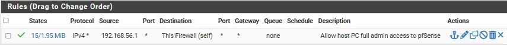
Rendimiento de red en un entorno virtualizado
Fallo 2 · Descargas lentas y con cortes
El rendimiento de red era irregular: ráfagas rápidas seguidas de parones, errores de checksum en Status → System Logs → System y retransmisiones TCP en transferencias largas.
La causa son los offloads de la NIC (Checksum Offload, TSO/TSO4/TSO6 y LRO), pensados para delegar trabajo en el silicio de una tarjeta física. En un entorno virtualizado el «hardware» es el driver virtual del anfitrión, cuya implementación suele ser incompleta, y el invitado acaba emitiendo checksums mal calculados o tramas sobredimensionadas que se descartan aguas abajo, forzando retransmisiones.
Se desactivaron los tres en System → Advanced → Networking y se reinició para aplicarlo de forma consistente en todas las interfaces. Calcular los checksums en software cuesta algo más de CPU por paquete, pero elimina una clase entera de descartes por corrupción, y la ganancia por no retransmitir compensa de sobra ese coste.
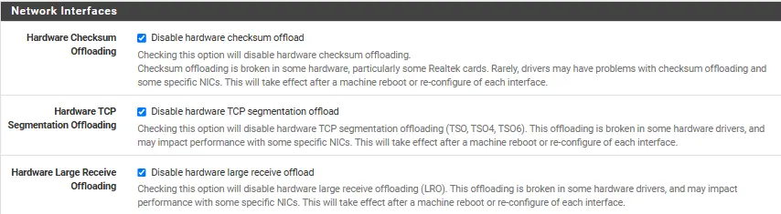
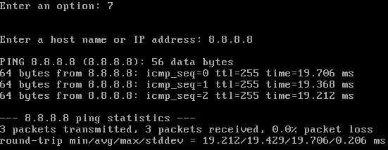
02VLAN 10: Active Directory y la workstation corporativa
VLAN 10 es la zona corporativa y aporta la capa de identidad de la que dependen el resto de escenarios: un Windows Server 2022 promovido a controlador de dominio, raíz del bosque soclab.local, con DNS integrado, una jerarquía de OU que imita una pyme y un usuario sin privilegios que será la identidad del día a día en los ataques.
| VM | vCPU | RAM | Disco | Red |
|---|---|---|---|---|
| SOC-10-AD (DC01) | 2 | 4 GB | 60 GB | internal-vlan10-corp |
| SOC-10-WinCorp (WS-CORP-01) | 2 | 4 GB | 60 GB | internal-vlan10-corp |
IP estática y DNS apuntando a sí mismo
El DC es el único host de VLAN 10 con IP fija y el único con el rol de DNS. El adaptador se pasa de DHCP a estático desde ncpa.cpl, y el servidor DNS se configura apuntando al propio host. Se usa la IP real (10.10.10.10) y no 127.0.0.1 porque es el patrón coherente con entornos multi-DC, donde los controladores se apuntan entre sí por IP.
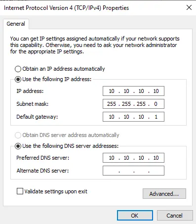
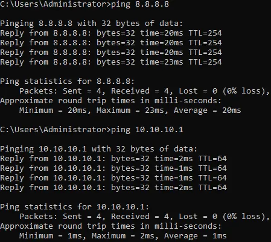
Promoción del bosque
| Parámetro | Valor |
|---|---|
| Operación | Añadir un bosque nuevo |
| Dominio raíz | soclab.local |
| Nivel funcional de bosque y dominio | Windows Server 2016 (el máximo que ofrece el asistente) |
| DNS / Catálogo global | Habilitados |
| RODC | Deshabilitado |
| NetBIOS | SOCLAB |
Windows Server 2016 sigue siendo la línea base moderna: Microsoft no introdujo niveles funcionales nuevos con 2019 ni con 2022. Tras el reinicio, la pantalla de login pasa a mostrar SOCLAB\Administrator en lugar del administrador local, confirmación de que la cuenta migró al dominio.
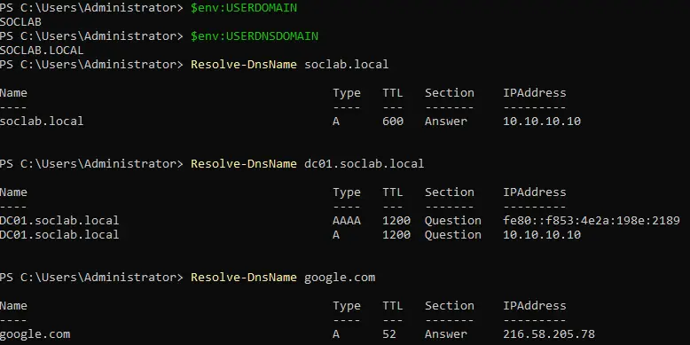
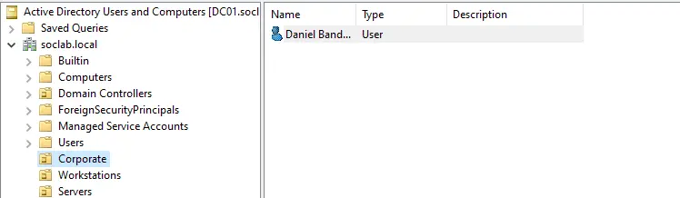
El primer usuario de dominio, dbandarica, se crea en Corporate/Users y no se mete en ningún grupo privilegiado. Los ataques que parten de un usuario estándar son mucho más representativos de la respuesta a incidentes real que los que empiezan con credenciales de Domain Admin en la mano.
El DHCP tiene que anunciar el DC como DNS
Por defecto, el servidor DHCP de VLAN 10 anuncia los mismos DNS que tiene configurados pfSense globalmente (1.1.1.1 y 8.8.8.8). Una workstation con ese lease no puede resolver _ldap._tcp.soclab.local ni el resto de registros SRV que exige el domain join. Se fija el campo DNS Servers del ámbito a 10.10.10.10.
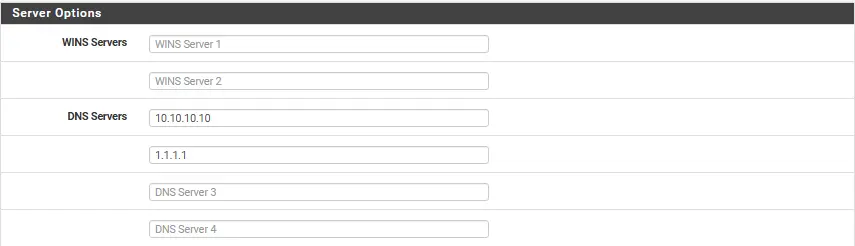
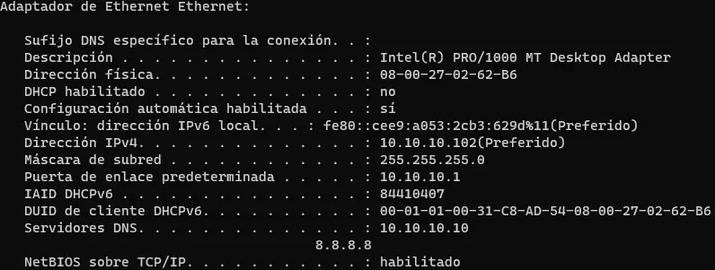
Unión al dominio
La workstation se renombra y se une al dominio en una sola operación desde System Properties → Computer Name → Change. Tras el reinicio se inicia sesión de forma interactiva con SOCLAB\dbandarica, y el objeto de equipo se mueve a la OU Corporate/Workstations.
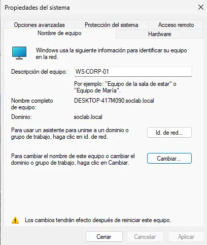
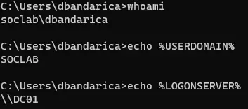
03VLAN 20: dos endpoints heterogéneos fuera del dominio
La zona de desarrollo monta un Windows 11 Pro (WS-DEV-01, usuario khernandez, RDP habilitado) y un Ubuntu Desktop 24.04 (ws-dev-02, usuario arodriguez, OpenSSH y UFW). Ninguno está unido a soclab.local: la separación de zonas se refuerza también en la capa de identidad, no solo en la de red.
La heterogeneidad es intencionada. Limitarse a Windows dejaría sin practicar la detección en Linux (auditd, journald, eventos SSH), el movimiento multiplataforma Linux → Windows, y las técnicas propias de entornos de desarrollo: claves SSH expuestas, repositorios con secretos, contenedores como vector.
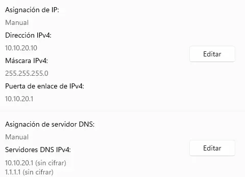
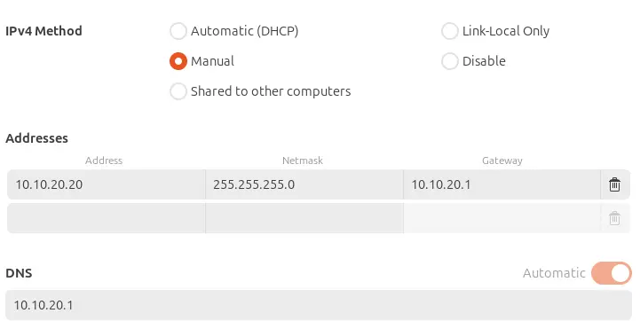
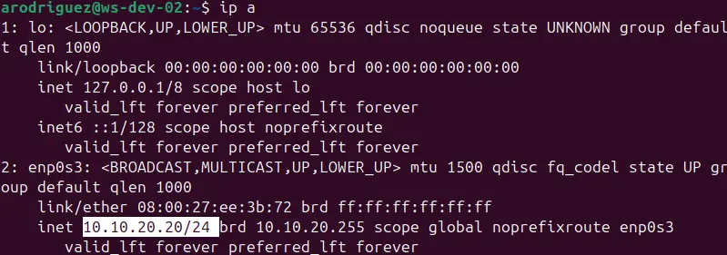
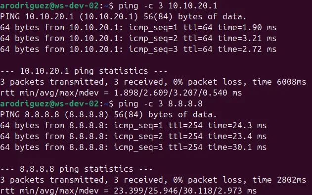
Línea base de firewall
Un segmento nuevo en pfSense no alcanza nada hasta que se le añaden reglas. Se pone una única regla de paso en Firewall → Rules → VLAN20 para salir a Internet y a los servicios de pfSense. El tráfico inter-VLAN sigue denegado: no hay ninguna regla que permita a VLAN 20 llegar a VLAN 10, 66 o 99, salvo el camino de telemetría hacia el SIEM que se abrirá en la fase siguiente.
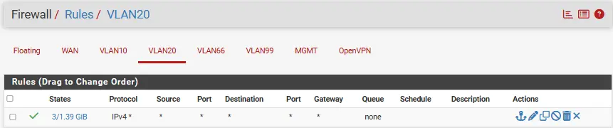
Validación de la segmentación
La separación se comprueba en los dos sentidos: dentro del segmento la conectividad funciona, y hacia la zona corporativa no hay camino.
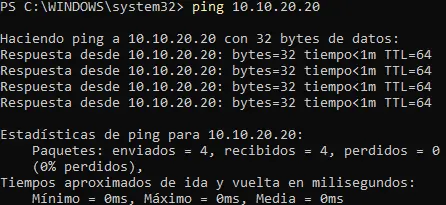
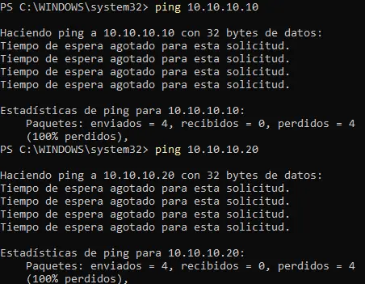
Fallo 3 · El resolutor de pfSense se cuelga en modo recursivo
Ninguno de los dos endpoints resolvía nombres externos: apt update se quedaba colgado, nslookup contra el gateway daba timeout y winget no descargaba nada. ICMP a 10.10.20.1 y a 8.8.8.8 sí funcionaba, así que el problema estaba localizado en DNS.
La prueba decisiva fue que nslookup google.com 1.1.1.1 desde el cliente resolvía, pero Diagnostics → DNS Lookup desde el propio pfSense también daba timeout: no era un problema de binding, era que pfSense no resolvía. Por defecto el DNS Resolver (Unbound) trabaja en modo recursivo y consulta directamente a los servidores raíz. Con el lab anidado detrás del NAT del hipervisor y de un router doméstico, esas consultas quedaban interceptadas o limitadas por el ISP.
Solución: forzar Unbound a modo forwarding en Services → DNS Resolver → General Settings para que delegue en los upstream configurados globalmente.
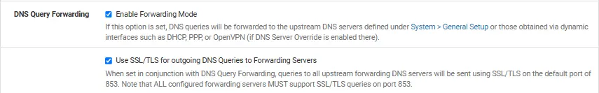
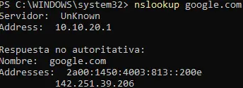
04VLAN 99: Wazuh fuera de banda
El stack SOC es un único Ubuntu Server 24.04 (wazuh-srv, 10.10.99.10) con Wazuh 4.14 en modo all-in-one: manager, indexer y dashboard en la misma VM.
La intención arquitectónica es la alcanzabilidad asimétrica: todos los segmentos vigilados deben poder empujar telemetría por tcp/1514 y enrolarse por tcp/1515, pero Wazuh no puede iniciar conexiones de vuelta. Si el SIEM se compromete, no debe convertirse en punto de pivote hacia producción.
| Recurso | Valor |
|---|---|
| vCPU / RAM / disco | 4 · 8 GB · 80 GB |
| Red | internal-vlan99-soc |
| IP | 10.10.99.10/24 |
Red por Netplan
network:
version: 2
ethernets:
enp0s3:
dhcp4: no
addresses:
- 10.10.99.10/24
routes:
- to: default
via: 10.10.99.1
nameservers:
addresses:
- 10.10.99.1
- 1.1.1.1
Firewall de host antes de instalar, no después
El orden no es casual. El instalador de Wazuh modifica el comportamiento de red de forma implícita (enlaza servicios a interfaces, abre puertos internos), así que añadir UFW a posteriori arriesga bloquear un puerto que Wazuh espera abierto. Establecer la línea base primero significa que cualquier problema posterior es atribuible al instalador y no a un cambio del sistema base.
sudo apt update && sudo apt upgrade -y sudo apt install -y curl wget gnupg ufw sudo ufw default deny incoming sudo ufw default allow outgoing sudo ufw allow 22/tcp comment 'SSH admin' sudo ufw enable sudo ufw status verbose
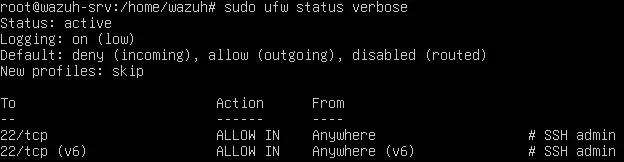
Reglas en pfSense para el modelo fuera de banda
Hay que configurar tres categorías de tráfico y nada más:
- VLAN 99 hacia fuera — el host de Wazuh necesita Internet (apt, el instalador) y los servicios de pfSense, pero tiene bloqueado iniciar conexiones hacia los demás segmentos del lab.
- Agentes hacia Wazuh — los endpoints de VLAN 10 y VLAN 20 necesitan llegar a 10.10.99.10 en los puertos 1514 y 1515.
- Host de administración hacia el dashboard — HTTPS a 10.10.99.10:443 a través de la red host-only.
Las reglas de agente se colocan explícitamente arriba de cada lista en lugar de confiar en las reglas genéricas de salida, para que el tráfico de telemetría sea visible y distinguible en los logs del firewall.
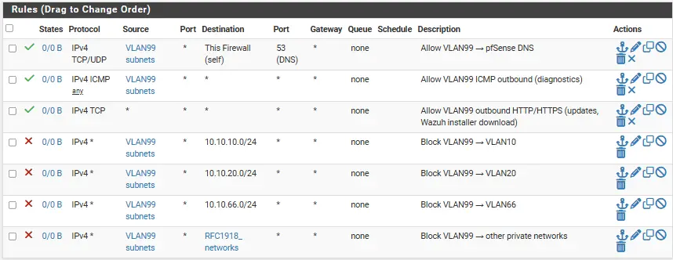
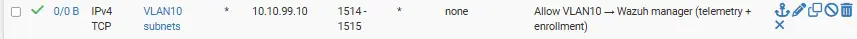
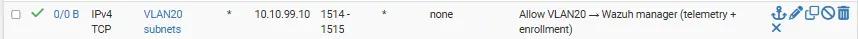
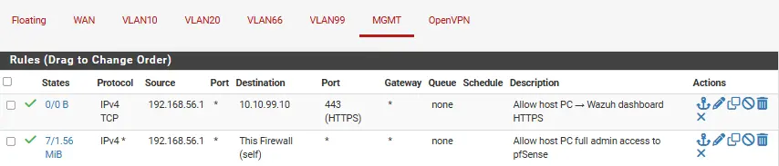
Instalación all-in-one
curl -sO https://packages.wazuh.com/4.14/wazuh-install.sh chmod +x wazuh-install.sh sudo bash wazuh-install.sh -a
Unos 20 minutos. El flag -a selecciona el modo all-in-one y genera la PKI interna que cubre el TLS mutuo entre manager, indexer y dashboard. La salida final imprime la URL y unas credenciales de admin generadas aleatoriamente.
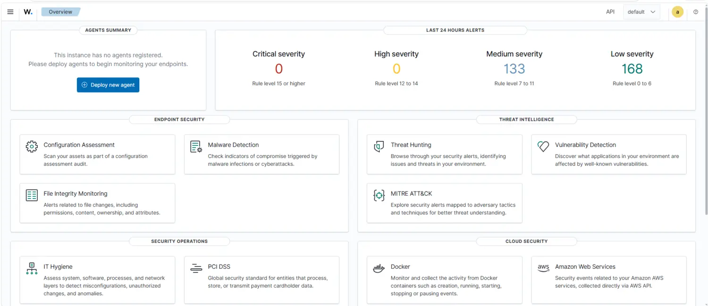
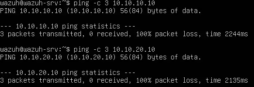
Fallo 4 · pfSense deja pasar, UFW no
Tras la instalación, el dashboard escuchaba correctamente en 0.0.0.0:443 y respondía a curl -k https://localhost, pero desde WS-CORP-01 el navegador daba timeout y Test-NetConnection -Port 443 devolvía TcpTestSucceeded: False. El ping sí llegaba, el socket estaba en LISTEN y el servicio estaba sano localmente: el bloqueo tenía que estar entre el TCP que llega al host y el socket, es decir, UFW.
El instalador de Wazuh no toca las reglas de UFW; asume que el operador abre los puertos como parte del despliegue. La lección: en una red con defensa en profundidad, firewall de perímetro y firewall de host son planos de control independientes, y un paquete que pasa pfSense no pasa UFW automáticamente.
sudo ufw allow 443/tcp comment 'Wazuh dashboard HTTPS' sudo ufw allow 1514/tcp comment 'Wazuh agent telemetry' sudo ufw allow 1515/tcp comment 'Wazuh agent enrollment'
05Cuatro agentes, dos sistemas operativos, dos capas de telemetría
Los agentes se despliegan con el asistente Server Management → Agents → Deploy new agent, que genera la URL del MSI y la línea de msiexec con el nombre de agente, la IP del manager y el grupo ya rellenos.
| Host | Zona | Modelo de identidad | Por qué entra |
|---|---|---|---|
| DC01 | VLAN 10 | Controlador de dominio | Genera los eventos Kerberos y NTLM de todo el dominio. La fuente de telemetría de mayor valor en un entorno Windows. |
| WS-CORP-01 | VLAN 10 | Miembro de AD | Vista de endpoint de una workstation autenticada: recibe GPO, habla con el DC, genera actividad típica de usuario. |
| WS-DEV-01 | VLAN 20 | Workgroup | El caso de contraste: mismo agente, mismo dashboard, sin AD. Demuestra que el SIEM es independiente de la capa de identidad. |
| ws-dev-02 | VLAN 20 | Workgroup (Linux) | Cobertura multiplataforma con auditd. |
Invoke-WebRequest -Uri https://packages.wazuh.com/4.x/windows/wazuh-agent-4.14.5-1.msi -OutFile $env:tmp\wazuh-agent; ` msiexec.exe /i $env:tmp\wazuh-agent /q WAZUH_MANAGER='10.10.99.10' WAZUH_AGENT_NAME='DC01' NET START WazuhSvc
Fallo 5 · El DC no resuelve nada que no sea su propio dominio
La descarga del MSI falló en DC01 con The remote name could not be resolved: 'packages.wazuh.com'. nslookup dc01.soclab.local resolvía y nslookup packages.wazuh.com devolvía Non-existent domain: el DNS interno funcionaba y no había reenvío al exterior.
Cuando un controlador de dominio sirve DNS para su propio dominio, por defecto no tiene camino para resolver nombres fuera de él. Se añadió 10.10.10.1 como forwarder en DNS → Properties → Forwarders. Es silencioso en el momento de la promoción y solo aparece la primera vez que el DC actúa como cliente de Internet.
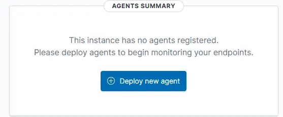
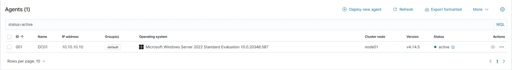
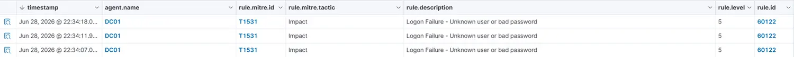
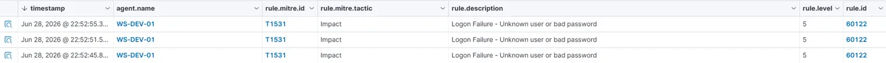
Sysmon en Windows: de SIEM a EDR
Sin Sysmon, el agente reenvía solo los logs nativos de Security, System y Application, básicamente autenticación y servicios. Con Sysmon, el mismo agente entrega creación de procesos, conexiones de red por proceso, modificaciones de registro, creación de ficheros, carga de imágenes y consultas DNS.
Se usa la configuración de SwiftOnSecurity, estándar de facto: activamente mantenida, con listas blancas afinadas para suprimir el ruido legítimo de Windows sin perder los eventos que importan.
# https://download.sysinternals.com/files/Sysmon.zip # https://raw.githubusercontent.com/SwiftOnSecurity/sysmon-config/master/sysmonconfig-export.xml C:\Sysmon\Sysmon64.exe -accepteula -i C:\Sysmon\sysmonconfig-export.xml Get-Service Sysmon64 Get-WinEvent -LogName 'Microsoft-Windows-Sysmon/Operational' -MaxEvents 5
El agente solo reenvía los canales que se le indican, y Sysmon escribe en uno propio. Hay que añadirlo de forma explícita en C:\Program Files (x86)\ossec-agent\ossec.conf y reiniciar el servicio con net stop WazuhSvc && net start WazuhSvc.
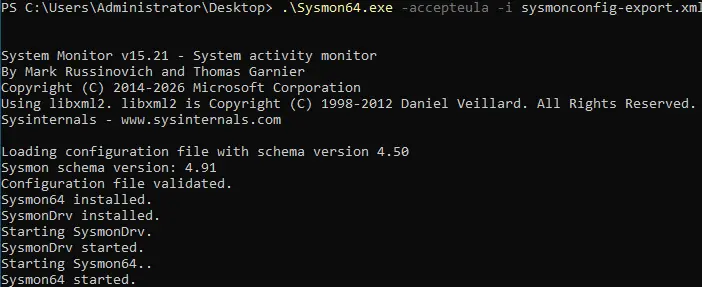
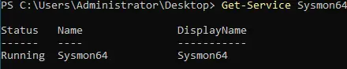
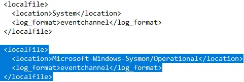
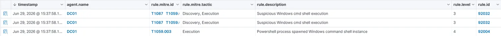
auditd en Linux: la misma visibilidad, sin componente externo
Este es el contraste pedagógico central. Windows necesita un componente externo para alcanzar visibilidad de nivel EDR; Linux ya expone lo equivalente de forma nativa a través del subsistema de auditoría del kernel. No hay que instrumentar nada, solo configurarlo. El mismo agente consume ambos, lo que demuestra que la capa de SIEM es independiente de cómo el sistema operativo expone sus eventos.
wget https://packages.wazuh.com/4.x/apt/pool/main/w/wazuh-agent/wazuh-agent_4.14.5-1_amd64.deb \ && sudo WAZUH_MANAGER='10.10.99.10' WAZUH_AGENT_NAME='ws-dev-02' dpkg -i ./wazuh-agent_4.14.5-1_amd64.deb sudo systemctl daemon-reload && sudo systemctl enable --now wazuh-agent sudo apt install -y auditd audispd-plugins sudo augenrules --load && sudo auditctl -l
Las reglas de auditoría van en /etc/audit/rules.d/soc-monitoring.rules, deliberadamente pocas y enfocadas en escalada de privilegios y modificación de ficheros de identidad: suficientes para demostrar capacidad de detección, estrechas para no arrastrar el ruido de un ruleset tipo STIG. Las mismas claves (priv_esc, identity_files) aparecen después en los eventos, lo que permite filtrar por contenido en el SIEM.
Tres fuentes en paralelo, tres decoders
La configuración final del agente no se apoya en un único fichero con un único decoder, sino en tres caminos complementarios:
- /var/log/auth.log → decoder sudo (ciclo de vida PAM, autenticaciones sudo)
- /var/log/syslog → decoder syslog (systemd)
- /var/log/audit/audit.log → decoder auditd (syscalls del kernel)
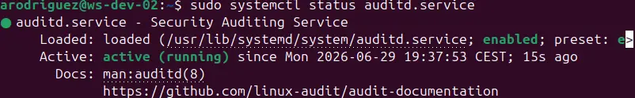
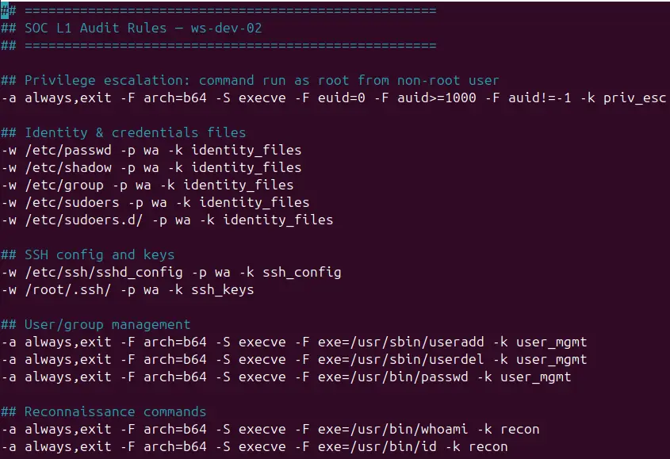
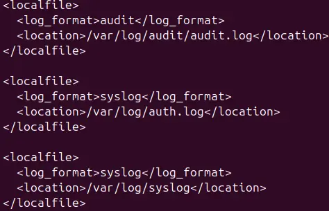
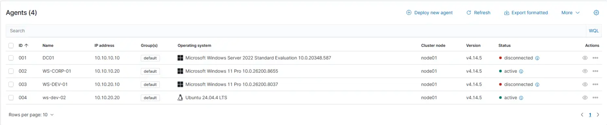
La verificación de que los tres caminos entregan eventos se hace con tres consultas en el dashboard: decoder.name: "auditd" (258 resultados), decoder.name: "sudo" (144) y full_log: "priv_esc" (30).
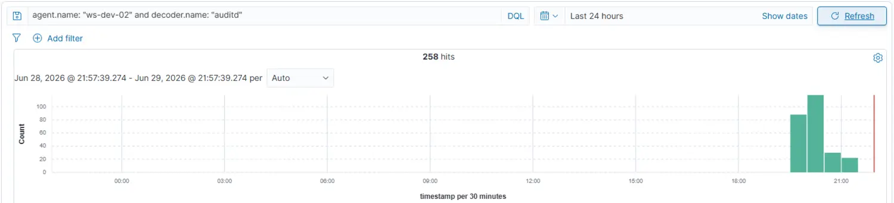
06La quinta fuente: pfSense por syslog
Añadir pfSense como fuente convierte el SIEM de endpoint-céntrico a endpoint + red: pass y block del firewall, leases DHCP y eventos de sistema pasan a ser buscables y correlacionables junto a los cuatro agentes.
Y hay una propiedad que importa: si un atacante compromete un host monitorizado y desactiva su agente, la telemetría de red sigue llegando de forma independiente. La telemetría sobrevive al endpoint.
Tres capas de filtrado sobre el mismo camino
sudo ufw allow proto udp from 10.10.99.1 to any port 514 comment 'pfSense syslog inbound'
Abrir to any port 514 sin filtro de origen convertiría el SIEM en receptor de syslog de cualquier host capaz de enrutar hasta la interfaz de VLAN 99. La segunda capa es un bloque <remote> adicional en ossec.conf con allowed-ips: aunque UFW se relajara por error, los paquetes de orígenes no autorizados se descartan en la capa de aplicación de Wazuh.
En pfSense, dentro de Status → System Logs → Settings, lo crítico es Source Address: VLAN99. Sin fijarlo, pfSense puede emitir los paquetes desde cualquiera de sus interfaces según la decisión de enrutado, y los que no vengan de 10.10.99.1 caerían por el filtro allowed-ips.
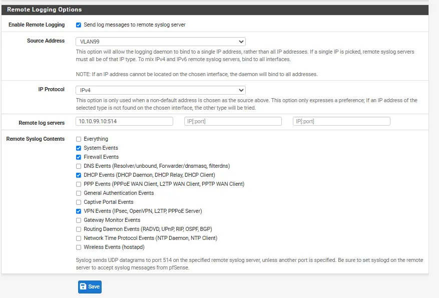
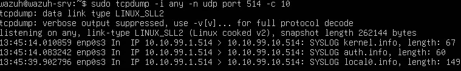
Fallo 6 · Los eventos llegan pero no se guardan
Las primeras búsquedas de eventos de pfSense no devolvían nada, aunque tcpdump confirmaba paquetes entrando. Los eventos se recibían, se decodificaban, se evaluaban contra reglas y se descartaban: por defecto Wazuh solo persiste los eventos que disparan una alerta, y los pass del firewall o los leases DHCP no disparan ninguna regla nativa porque son telemetría legítima sin motivo para alertar.
La solución son los dos flags de archivo en el bloque <global>, que hacen que todo evento recibido se persista con independencia de si alertó:
<logall>yes</logall> <!-- archives.log, formato texto --> <logall_json>yes</logall_json> <!-- archives.json, estructurado -->
Y después un segundo interruptor independiente en Filebeat, porque el instalador habilita solo los alerts: filebeat.modules → wazuh → archives.enabled: true.
La lección es la división arquitectónica de cualquier SIEM entre alerts (disparadas por regla, alta señal) y archives (ingesta cruda, alto volumen). Para investigación forense y threat hunting, los archives son imprescindibles: permiten investigar eventos que parecían inocuos cuando se ingirieron.
Decoder propio para filterlog
Se desarrolló un decoder a medida en /var/ossec/etc/decoders/pfsense_custom.xml siguiendo el patrón padre + hijos de Wazuh: un padre ligero que casa con el prefijo syslog (filterlog[PID]:) y dos hijos especializados por familia de protocolo (campos IPv4 base, e IPv4 con puertos para TCP/UDP). Extrae siete campos estructurados: interfaz, razón, acción, dirección, protocolo, IP origen e IP destino, más puertos cuando aplica.
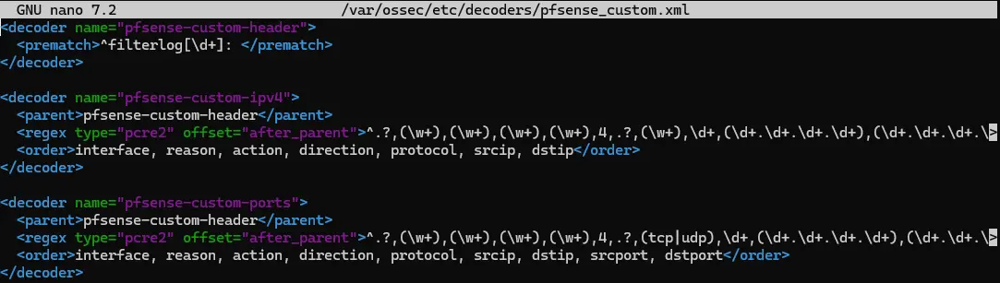
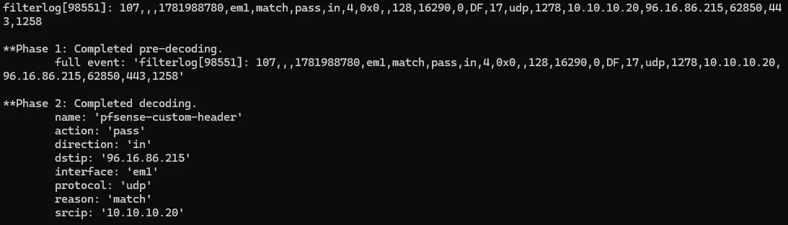
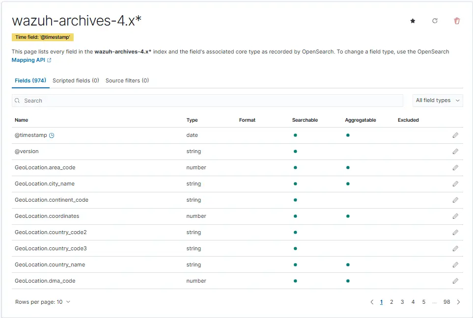
07De «tenemos logs» a «tenemos visibilidad»
Cinco fuentes alimentando un indexer no son un SOC, son una tubería de datos. Lo que convierte la tubería en herramienta son dos cosas: reglas que transforman eventos crudos en alertas con significado, y un panel único diseñado para el flujo de trabajo de un analista de nivel 1.
El problema concreto: al terminar la integración de syslog, la telemetría de pfSense vivía en wazuh-archives-* y no llegaba a wazuh-alerts-*, porque el ruleset nativo no alerta sobre eventos genéricos de pass o block. Y la arquitectura del lab define VLAN 10 y VLAN 20 como zonas aisladas, así que cualquier paquete bloqueado entre ellas es por definición una violación de política: o un ataque, o una mala configuración. Las dos cosas quiere verlas un L1, pero no deberían tratarse igual.
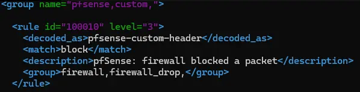
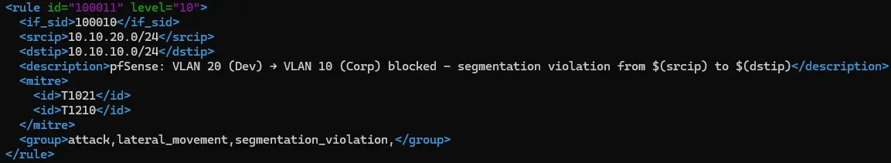
Detalle de sintaxis
<field name="action"> fue rechazado como campo estático y hubo que corregirlo a una comprobación de cadena con <match>.
Siete visualizaciones, siete preguntas de triaje
El dashboard se construye entero sobre wazuh-alerts-*, excluyendo los archives a propósito: las alertas son eventos que necesitaron lógica de detección para ser identificados, los archives son el sustrato crudo. Cada widget responde a una pregunta concreta que un L1 se hace en turno.
| Widget | Pregunta que responde |
|---|---|
| Total de alertas (24 h) | ¿El volumen actual es normal, elevado o anómalo? Umbrales de color: verde hasta 100, amarillo hasta 300, rojo por encima. |
| Alertas por severidad | ¿Domina el ruido de baja severidad o hay eventos altos que requieren atención? |
| Línea temporal | ¿Cuándo se dispararon? ¿Hay picos fuera de las ventanas esperadas? |
| Top 10 reglas | ¿Qué reglas generan más alertas? ¿Hay algo anómalo o una regla mal calibrada? |
| Top agentes | ¿Qué host genera más? ¿Lo justifica su rol? Un agente que pasa de 20 alertas diarias a 500 es señal fuerte. |
| Cobertura MITRE | ¿Qué tácticas se observan y en qué hosts? Es el centro visual del panel. |
| Autenticaciones fallidas | ¿Alguien intenta autenticarse y falla? ¿Desde dónde y contra qué cuenta? Filtrado por rule.groups: "authentication_failed"; vacío es el estado sano. |
08VLAN 66: el adversario, con capacidades talladas a mano
Aquí el laboratorio cambia de perspectiva: deja de preguntarse cómo detecto y empieza a preguntarse qué necesito detectar.
El paradigma es Assume Breach. En lugar de modelar un atacante externo en el perímetro (escenario donde las defensas modernas absorben casi todo el trabajo), el lab modela el momento después de que el perímetro ya ha fallado. Kali no es «un atacante en Internet»: es un atacante que ya tiene pie dentro, por un endpoint comprometido o un implante entregado por phishing. El trabajo del defensor no es impedir la brecha inicial, sino detectar la actividad que viene después.
| Vector | Escenario real | Lo que exige del firewall |
|---|---|---|
| 1 · Phishing a C2 | Un usuario abre un adjunto y el payload abre una conexión HTTPS saliente hacia el servidor de mando y control. | VLAN 10 y 20 deben poder iniciar TCP hacia Kali en los puertos de C2 (443, 80, 4444, 8080). Es el endpoint el que sale, no Kali el que entra. |
| 2 · Fuerza bruta SSH y RDP | Un atacante con acceso inicial descubre servicios expuestos e intenta ataques de credenciales. | Kali debe poder iniciar TCP hacia VLAN 10 y 20 en tcp/22 y tcp/3389. Ningún otro puerto. |
Más allá de esos vectores, no se concede ninguna capacidad. Las fronteras son absolutas y se aplican con reglas de bloqueo explícitas con logging: VLAN 66 → VLAN 99 (el SIEM debe ser inalcanzable), VLAN 66 → MGMT, VLAN 66 → pfSense. Cada intento de cruzarlas se registra, así que el intento mismo se convierte en telemetría.
Inventario de herramientas por táctica
El inventario se organiza por táctica MITRE y no por orden alfabético, porque esa categorización mapea cada herramienta a la categoría de detección que los escenarios van a ejercitar: Sliver C2 y chisel en Command and Control; Mimikatz, hydra, responder, kerbrute e Impacket en Credential Access; nmap y BloodHound en Discovery; evil-winrm, crackmapexec e Invoke-TheHash en Lateral Movement; certipy en Privilege Escalation.
Validación del envoltorio de capacidades
Las pruebas de conectividad confirman el envoltorio definido por las reglas: los caminos permitidos responden, los denegados fallan en silencio.
Hallazgo · El gateway no responde pero Internet sí
Durante la validación aparece una observación aparentemente contradictoria: ping 10.10.66.1 no responde, pero ping 1.1.1.1 sí, aunque el tráfico a Internet pasa necesariamente por el gateway.
No es un defecto, es el diseño. Una de las reglas del conjunto de VLAN 66 bloquea VLAN66 net → This Firewall (self), que incluye 10.10.66.1. El tráfico a Internet, en cambio, no va dirigido a pfSense: va enrutado a través de pfSense, y la lógica de enrutado opera antes que las reglas que bloquean el tráfico hacia self. traceroute -n 1.1.1.1 lo confirma: el primer salto sale como * * * y los siguientes completan con normalidad.
La lección general: una regla que deniega el tráfico hacia el firewall no deniega el tráfico enrutado a través de él. Son dos puntos distintos del pipeline de procesamiento de paquetes.
09Estado final del lab
- pfSense 2.8.1-RELEASE enrutando entre cuatro segmentos y saliendo por NAT, con seis interfaces operativas y los offloads de NIC desactivados.
- Bosque soclab.local con DC01 como primer controlador, DNS integrado con forwarders, jerarquía de OU y un usuario de dominio sin privilegios.
- Cuatro endpoints desplegados: dos Windows en dominio, un Windows en workgroup y un Ubuntu, repartidos en dos zonas de confianza.
- Segmentación verificada en los dos sentidos: ni desde desarrollo se alcanza la zona corporativa, ni desde el SIEM se alcanzan los segmentos vigilados.
- Wazuh 4.14.5 all-in-one en VLAN 99 con cuatro agentes activos, Sysmon en los tres Windows y auditd con ruleset propio en Linux.
- Cinco fuentes de telemetría: DC01, WS-CORP-01, WS-DEV-01, ws-dev-02 y pfSense, cubriendo endpoint y red en todas las zonas.
- Archives habilitados en manager y Filebeat, decoder propio para filterlog con siete campos, y patrón de índice wazuh-archives-*.
- Tres reglas propias desplegadas (100010, 100011, 100012) y un dashboard SOC L1 de siete widgets con vista de cobertura MITRE.
- Kali en DMZ con los vectores habilitados por regla, fronteras inmutables validadas y snapshots tomados en cada VM antes de atacar.